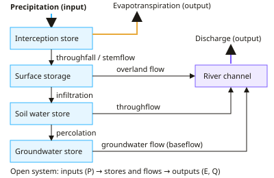

A-level Geography Year 13 · Topic 13
The water cycle and water insecurity
The water cycle and water insecurity explores how water moves around the planet, and why many people lack enough of it.
We will study the water cycle as a system, how it changes, and case studies of the Amazon and the Arctic.
Then we examine water insecurity, its causes, conflicts over shared rivers, and strategies for sustainable water supply.
- 8 subtopics
- 428 questions
- Free: 13.1 notes and 10 questions
In this topic
- 13.1The water cycle as a system: drainage basin and global stores, flows and the water balanceFree below · 25 questions
- 13.2Changes in the water cycle: natural variability (ENSO), land use, urbanisation and extractionOpen in Full Marks · 75 questions
- 13.3Water cycle case studies: Amazon rainforest and Arctic cryosphere, plus hydrograph and water budget analysisOpen in Full Marks · 67 questions
- 13.4Water insecurity: physical and economic scarcity, water stress and water povertyOpen in Full Marks · 29 questions
- 13.5Causes of water insecurity: population growth, climate, pollution and demandOpen in Full Marks · 67 questions
- 13.6Water conflicts and transboundary rivers: players and geopoliticsOpen in Full Marks · 65 questions
- 13.7Sustainable water supply strategies: dams, desalination, groundwater, transfers and conservationOpen in Full Marks · 40 questions
- 13.8Water management case study: large-scale versus community-based solutionsOpen in Full Marks · 60 questions
13.1 · Free notes
The water cycle as a system: drainage basin and global stores, flows and the water balance

Key points
- The global water cycle is a closed system: the total volume of water is effectively constant and water only moves between stores. A drainage basin is an open system, with inputs (precipitation) and outputs (evapotranspiration, discharge) crossing its boundary.
- A drainage basin is the area drained by a river and its tributaries, bounded by a watershed. Key features include the source, tributary, confluence and mouth.
- Global stores: oceans hold about 96.5% of all water. Freshwater is only about 2.5–3%, of which roughly 69% is cryosphere ice (glaciers, ice caps, ice sheets) and about 30% is groundwater. Lakes, rivers, soil moisture and the atmosphere together hold well under 1% of freshwater.
- Residence times differ greatly. The atmosphere is about 9 days, rivers about 2 weeks, oceans about 3,000–4,000 years and ice sheets tens of thousands of years or more. Short residence time means a fast, responsive store.
- Flows (transfers) are evaporation, transpiration, evapotranspiration, sublimation, condensation and precipitation. Within the basin they are interception, infiltration, percolation, throughflow, overland flow, groundwater flow and channel flow. Interception covers stemflow and throughfall.
- Precipitation types: convectional (surface heating), frontal (warm air rising over cold air) and orographic (moist air forced up high ground, cooling and condensing). Rainfall intensity and type affect how quickly water reaches the river.
- The drainage basin water balance equation is P = Q + E ± ΔS. P is precipitation, Q is runoff (discharge), E is evapotranspiration and ΔS is change in storage. All terms must use the same units, such as mm per year.
- The runoff ratio is Q ÷ P, a value between 0 and 1 (or a percentage). To convert discharge to depth, divide volume (m³) by basin area (m²), so 1 mm over 1 km² = 1,000 m³. Annual flow in m³ = mean discharge (m³/s) × 31.5 million s.
- The soil moisture budget compares precipitation with potential evapotranspiration (PET) through the year. Stages are recharge (autumn), surplus at field capacity, utilisation (spring/summer) and deficit when the store is exhausted. Plants reach wilting point in deficit.
- Oceans supply about 86% of global evaporation and receive about 78% of global precipitation. Net transport of vapour to land balances the return of runoff to the sea, so the global cycle stays in dynamic equilibrium.
In more detail
- Global water: about 97% is salty ocean water; of the 2.5% that is fresh, about 69% is ice, about 30% is groundwater and only about 1% is surface water.
- Global flow: about 500 000 km³ of water evaporates from the Earth's surface every year.
- Worked balance: P = 900 mm = Q 400 mm + E 450 mm + ΔS 50 mm.
- Scales: the global water cycle is a closed system, while each drainage basin is an open system.
Practice
The water cycle as a system: drainage basin and global stores, flows and the water balance: 10 questions
Pick an answer to check it, or open the answer for the explanation.
1. Which store holds the largest volume of freshwater on Earth?
- Groundwater
- Glaciers and ice caps
- Lakes and rivers
- Soil moisture
Show answer
B: Glaciers and ice caps. Ice sheets and glaciers hold about 69% of freshwater (roughly 1.7% of all water). Groundwater is about 30%, and lakes, rivers and soil hold very little.
2. Why is a drainage basin described as an open system?
- Matter and energy cross its boundary, e.g. rain in and discharge out
- Its total water volume never changes
- It is bounded only by the sea
- It contains no stores of water
Show answer
A: Matter and energy cross its boundary, e.g. rain in and discharge out. A drainage basin has inputs (precipitation) and outputs (evapotranspiration, river discharge), so water and energy cross its boundary. The global cycle is closed.
3. Annual precipitation is 1500 mm and river runoff is 450 mm. What is the runoff ratio (Q/P)?
- 0.30
- 0.70
- 3.3
- 0.33
Show answer
A: 0.30. Runoff ratio = Q ÷ P = 450 ÷ 1500 = 0.30, so 30% of precipitation leaves as river flow. The rest is evapotranspiration or storage.
4. Which store has the shortest average residence time?
- Oceans
- Atmosphere (about 9 days)
- Deep groundwater
- Antarctic ice sheet
Show answer
B: Atmosphere (about 9 days). Atmospheric water vapour turns over in about 9 days. Oceans take thousands of years, and ice sheets and deep groundwater take thousands to many thousands of years.
5. Water moving downslope through the soil, roughly parallel to the ground surface, is called:
- Stemflow
- Infiltration
- Percolation
- Throughflow
Show answer
D: Throughflow. Throughflow is lateral movement of water through soil to the channel. Infiltration is entry into the soil, percolation is downward movement into rock, and stemflow runs down stems.
6. In late July a UK soil moisture budget shows PET above precipitation and the soil store empty. Which term applies?
- Field capacity
- Soil moisture recharge
- Soil moisture deficit
- Soil moisture surplus
Show answer
C: Soil moisture deficit. When PET exceeds precipitation and the soil store has been used up, there is a soil moisture deficit. Plants are stressed and irrigation may be needed.
7. Which statement about the global water cycle is correct?
- Oceans hold about 50% of all water
- Total water increases as ice melts
- It is an open system receiving water from space
- It is a closed system with a roughly constant total volume
Show answer
D: It is a closed system with a roughly constant total volume. Globally the cycle is closed: water changes store rather than being gained or lost. Melting ice moves water from the cryosphere to the oceans, which hold about 96.5%.
8. What is percolation?
- Entry of water into the soil surface
- Water held on leaf surfaces
- Flow of water down plant stems
- Downward movement of water from soil into underlying rock
Show answer
D: Downward movement of water from soil into underlying rock. Percolation is the gravity-driven downward flow of water from soil into permeable rock, recharging groundwater. Infiltration is entry at the surface.
9. The direct change of ice to water vapour without first melting is called:
- Deposition
- Sublimation
- Transpiration
- Condensation
Show answer
B: Sublimation. Sublimation is solid to gas. Deposition is the reverse (vapour to ice), condensation is vapour to liquid, and transpiration is loss of water vapour from plants.
10. A basin has P = 800 mm, Q = 250 mm and E = 650 mm over a year. What does this suggest?
- Stores gained 100 mm
- Stores lost 100 mm, e.g. groundwater or soil water
- Stores unchanged, the budget balances
- Precipitation was recorded wrongly
Show answer
B: Stores lost 100 mm, e.g. groundwater or soil water. ΔS = 800 − 250 − 650 = −100 mm. Outputs exceeded inputs, so water was drawn from stores such as soil moisture or groundwater.
Keep going in Full Marks
Full Marks has 25 questions on The water cycle as a system: drainage basin and global stores, flows and the water balance (15 more than here), set out in practice levels. You also get notes and 3D models for all 8 subtopics of The water cycle and water insecurity, plus games, timed exams and past papers.
On your exam board
Not in the OCR A and Cambridge specifications.